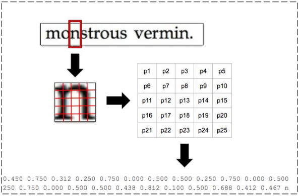

Project Description

TensorFlow deep learning for classifying characters incorporated into an existing optical character recognition project.
As part of the University of Kentucky Senior Design Project, integrated a TensorFlow model built in Python into an existing OCR project built in C by UK Professor Raphael Finkel.
Although not as effective as Professor Finkel's existing nearest neighbor search algorithm for classifying the characters, our model achieved accuracy in the range of 70-85% on test documents in dozens of different languages containing 100,000's of characters.
Communication between existing C project and new TensorFlow OCR model using Makefile and command line flag
Options for GUI or terminal shell output
Output included all the different characters in the given language and their success rate based on the test data to allow for better optimization of training data.
Integrating projects written in C and Python
Understanding the high-level design and detailed functionality of an existing project with 5000+ lines of code
Creating and calibrating a deep learning model using TensorFlow
Creating shortcut commands using a Makefile
Changing a project design on the fly during the Maintenance Assignment portion of the project (we were asked to incorporate GUI functionality into our code while halfway through our original design)
Leah Woodworth and Blake Price helped create the project. Leah was instrumental in figuring out Anaconda and made a huge contribution to the parsing process in the Python file. Blake also helped with the parsing process and figured out the process for testing the accuracy of our training data.
Thanks to Professor Finkel for the helping us understand the project and for letting us to use it as a sandbox for experimenting with TensorFlow models
Thanks to the UK Senior Design experience, and especially Professor Jane Hayes and Jeff Chartos for facilitating the course and offering great feedback on the coding and logistical issues we had along the way.